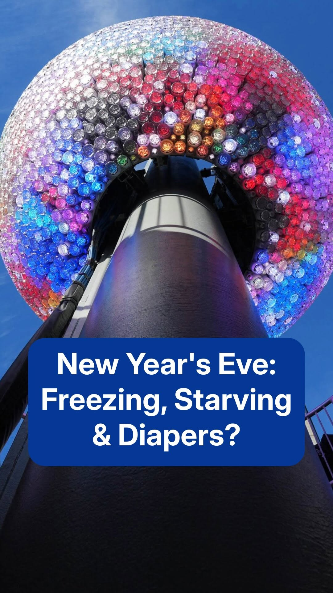
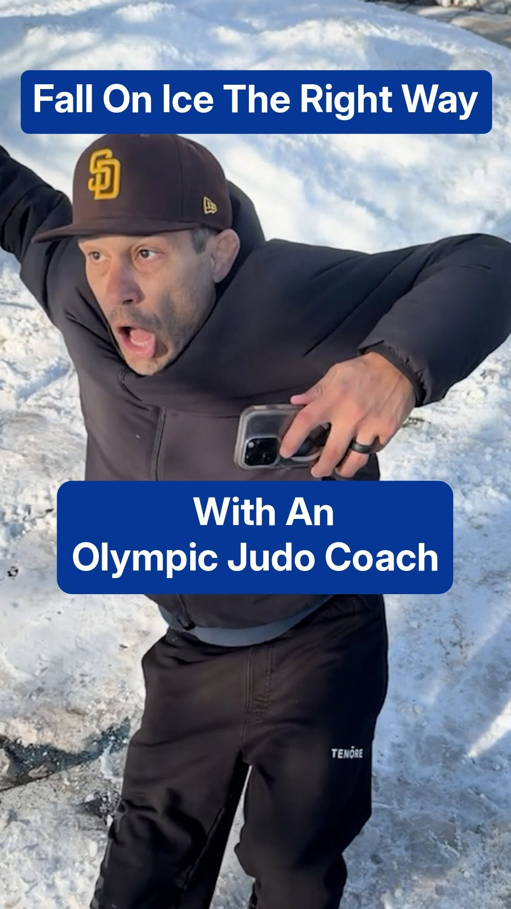
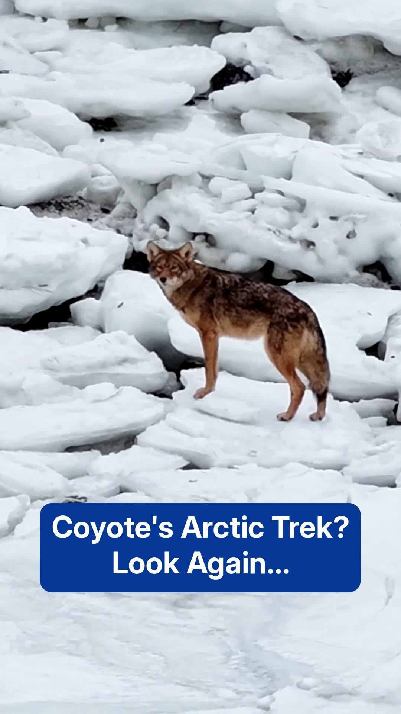
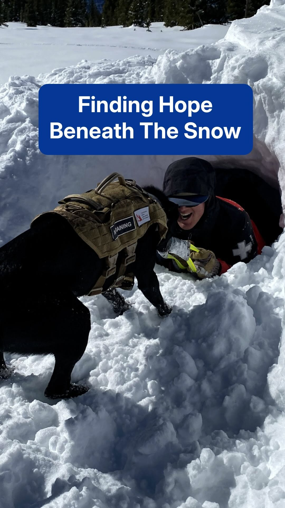
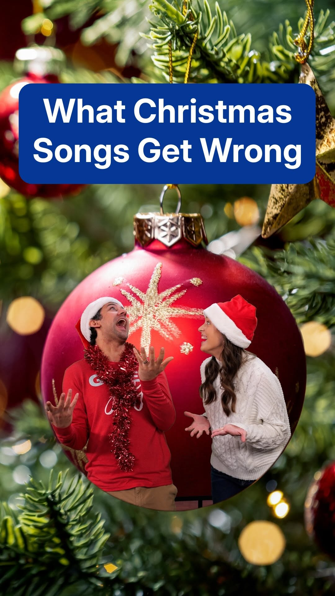

Headliner 1st Place · Telly Gold
The Last Ascent
Climber Will Gadd documents how the icy mountains he loves are vanishing in a warming world.
Watch the film →Senior Video Producer · The Weather Channel
From short-form digital content to long-format documentaries, I push the boundaries of creativity and technology to deliver powerful, high-impact messages.
“I believe there is no single, set-in-stone way to tell a story — it is an evolving art form designed to connect with human emotion.”
I combine journalism, technical post-production, and digital innovation to turn complex weather and human-interest stories into content that captivates millions.
I’m a Senior Video Producer at The Weather Channel, where I craft compelling, fast-paced digital video and elevate visual stories with clean, engaging design. I thrive on creative challenges and love finding new ways to make audiences feel the story.
My path has spanned two countries and two languages — from on-air reporting in Colombia to producing for national U.S. media. That journey shapes how I tell stories today: with empathy, range, and a reporter’s instinct for what matters.
My passion for storytelling began on the set of the Colombian TV series Juego Limpio, where I worked as an actress while studying sports journalism. Being in front of the camera sparked a deeper curiosity — I wanted to create the stories myself.
I started as an investigative news intern and worked my way up to on-air reporter, covering high-stakes beats — health, sports, economics, and politics — for national morning and afternoon broadcasts.
Ready to learn the entertainment side, I joined FOX’s Colombian production house, managing post-production workflows for major TV shows, reality series, documentaries, and telenovelas.
Realizing that global storytelling required a global language, I made a bold move to Atlanta, Georgia — learning English as a second language at Georgia Tech and earning my Master’s in Film & Television from the Savannah College of Art and Design (SCAD).
Re-establishing my career in a new country and a second language was a massive challenge, but persistence paid off. I started as a News Desk Intern and was quickly promoted to Associate Producer.
I took a leap away from Spanish-language media to challenge myself fully in English at The Weather Channel’s digital team — and was promoted to Senior Video Producer in 2025. Today I lead creative video work that turns data and human stories into high-impact content.
I’m always exploring how AI can speed up and elevate creative work — from generative visuals and AI voice to smart assistants that streamline production. A few tools I work with:
A selection of award-winning short documentaries I produced and edited at The Weather Channel.
Climber Will Gadd documents how the icy mountains he loves are vanishing in a warming world.
Watch the film →
Sculptor Thomas Dambo builds giant trolls from recycled materials to inspire recycling and protect forests.
Watch the film →
Tom Turcich and his dog Savannah return home after a seven-year walk around the globe.
Watch the film →
After a wildfire destroys a home, one man drives an RV cross-country to give a survivor shelter.
Watch the film →
Racers battle heat, exhaustion, and fog in the grueling 340-mile MR340 canoe and kayak race.
Watch the film →
All-women crews sail the globe to research and find solutions for toxic ocean microplastics.
Watch the film →
Three Scottish brothers set records as the youngest and fastest crew to row the Atlantic, for charity.
Watch the film →
A look at the fight to stop children from dying of heatstroke in hot cars.
Watch the film →Let’s work together
I’m always glad to connect about storytelling, collaborations, and new creative challenges. The best way to reach me is email.
andrea.rainone19@gmail.com
Social & Short-Form
Vertical, fast-paced storytelling I produce for The Weather Channel’s social channels — made to stop the scroll.

♥ 10.4K Inside the wait for a Times Square ball-drop spot
♥ 1.1K An Olympic judo coach on how to fall safely on ice
♥ 836 A lone coyote roams the snowy New England coast
♥ 801 The four-legged heroes of severe weather
♥ 255 The science myths hiding in your Christmas songsMore on Instagram → @weatherchannel